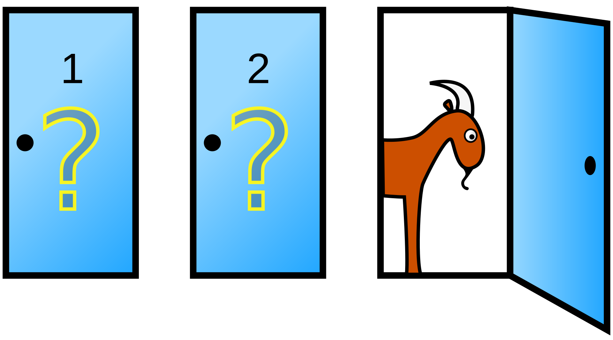
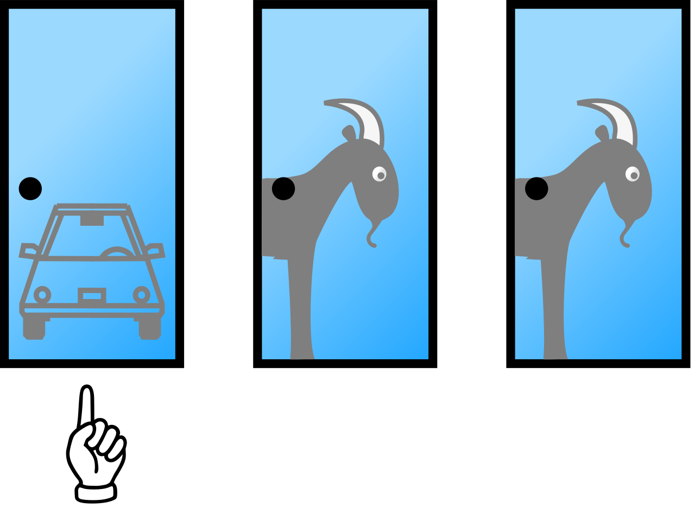
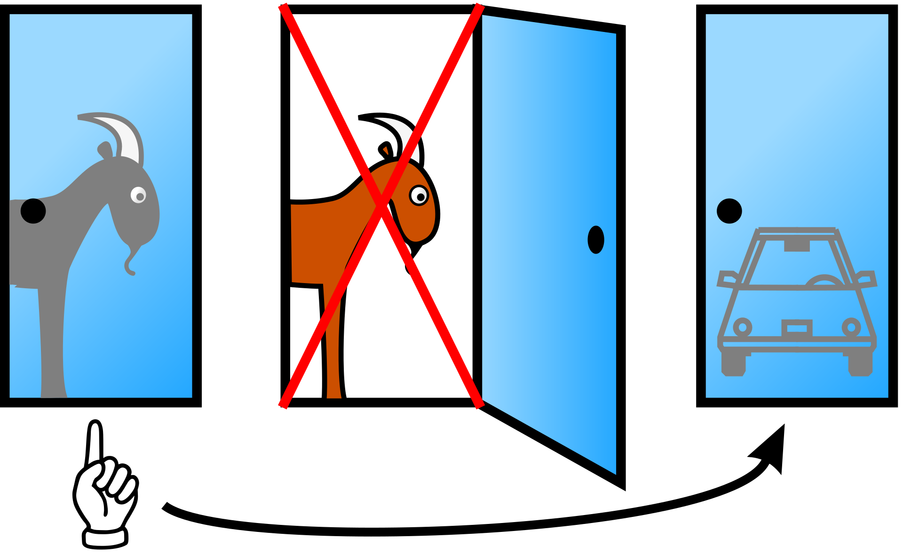

import numpy as npRandom Numbers and Fancy Indexing
Module 3: NumPy
Random Numbers and Fancy Indexing
The Monty Hall Problem
Suppose you are on a game show, and you are given the choice of three doors: Behind one door is a car; behind the others, goats. You pick a door, say No. 1, and the host, who knows what is behind the doors, opens another door, say No. 3, which has a goat. He then says to you, “Do you want to pick door No. 2?” Is it to your advantage to switch your choice?

To answer this question, we can simulate the game a big number of times. In the first run of simulations we keep the door we chose, in the second run we switch doors. Then we compare our winning percentage.
Setup
For this lesson we will only need NumPy.
Preparing the Game
Initializing the Matrix
We can use numpy arrays to represent the doors on each game, in the form of a matrix \(\boldsymbol{x}\) with shape \((N, 3)\) where \(N\) is the number of games we play. Values \(x=0\) represent a goat, while \(x=1\) represents the car.
# Let us start with a low number of games
n_games = 10
# Initialize the matrix, filled with zeros (only goats)
x = np.zeros((n_games, 3))
print(x)[[0. 0. 0.]
[0. 0. 0.]
[0. 0. 0.]
[0. 0. 0.]
[0. 0. 0.]
[0. 0. 0.]
[0. 0. 0.]
[0. 0. 0.]
[0. 0. 0.]
[0. 0. 0.]]
Exercise: Inspect the game matrix
Without running any code, answer these three questions about x:
- What is its shape?
- What is the type of the variable
x? - What is the type of its elements?
Then check your answers with code.
Solution
print("Shape of x:", x.shape)
print("Type of x:", type(x))
print("Types inside x:", x.dtype)Shape of x: (10, 3)
Type of x: <class 'numpy.ndarray'>
Types inside x: float64The shape is (10, 3): one row per game and one column per door. x is a NumPy array (numpy.ndarray), and its elements are float64.
By default, NumPy initializes arrays of zeros with a floating-point data type. For this game we only need 0 and 1, so we can request integers directly.
x = np.zeros((n_games, 3), dtype=int)
print("Types inside x:", x.dtype)
print(x)Types inside x: int64
[[0 0 0]
[0 0 0]
[0 0 0]
[0 0 0]
[0 0 0]
[0 0 0]
[0 0 0]
[0 0 0]
[0 0 0]
[0 0 0]]
Exercise: Rows, columns, elements
Let’s review some basic concepts. Knowing how to do this will help in the next steps. Print:
- The first row of
x(the doors of the first game). - The first column of
x(the first door of each game). - The first element of
x(the first door of the first game).
Solution
print("First row of x (doors of the first game): ", x[0, :])First row of x (doors of the first game): [0 0 0]print("First column of x (first door of each game):", x[:, 0])First column of x (first door of each game): [0 0 0 0 0 0 0 0 0 0]print("First element of x (first door of first game): ", x[0, 0])First element of x (first door of first game): 0As of now, all doors have a goat behind (a 0).
NumPy arrays are mutable, so we can assign new values to their elements.
# Add a car to the first door of the first game
x[0, 0] = 1
print(x)[[1 0 0]
[0 0 0]
[0 0 0]
[0 0 0]
[0 0 0]
[0 0 0]
[0 0 0]
[0 0 0]
[0 0 0]
[0 0 0]]# Add a car to the first door of every game
x[:, 0] = 1
# This is the same as saying
# For each row `:` in `x`
# Change the first value (index `0`) to `1`
print(x)[[1 0 0]
[1 0 0]
[1 0 0]
[1 0 0]
[1 0 0]
[1 0 0]
[1 0 0]
[1 0 0]
[1 0 0]
[1 0 0]]Now there is a car for each game, but all cars are always at the first door.

Advanced Indexing
If we want the car to be placed randomly, we must use advanced indexing.
Numpy arrays can be indexed using lists, as long as all lists have the same length.
list_0 = [a0, b0, c0]
list_1 = [a1, b1, c1]
# Being x a 2D array
x[list_0, list_1]
# Is the same as indexing the following elements
x[a0, a1], x[b0, b1], x[c0, c1]# Sample matrix
y = np.array([
[1, 2, 3],
[4, 5, 6],
[7, 8, 9]
])
# Take elements (0, 0), (1, 1) and (2, 2)
idx = [0, 1, 2]
idy = [0, 1, 2]
print(y[idx, idy])[1 5 9]
Exercise: Mismatched index lists
Without running the code, decide whether it works. If it fails, explain why.
y = np.array([
[1, 2, 3],
[4, 5, 6],
[7, 8, 9]
])
idx = [0, 1]
idy = [0, 1, 2]
print(y[idx, idy])
Solution
It raises an error:
IndexError: shape mismatch: indexing arrays could not be broadcast together with shapes (2,) (3,)The row list has two indices and the column list has three, so NumPy cannot pair them into coordinates. If the index arrays do not have compatible shapes, indexing fails.
Pay attention to the structure of advanced indexing:
# Good
x[[a0, b0, c0], [a1, b1, c1]]
# Bad
x[[a0, a1], [b0, b1], [c0, c1]]
Exercise: Coordinates in the wrong order
The programmer wants the diagonal elements (0, 0), (1, 1) and (2, 2) of y. Without running the code, explain what goes wrong. Then fix it.
y = np.array([
[1, 2, 3],
[4, 5, 6],
[7, 8, 9]
])
print(y[(0, 0), (1, 1), (2, 2)])
Solution
It raises an error:
IndexError: too many indices for array: array is 2-dimensional, but 3 were indexedEach group was written as one coordinate pair, so NumPy receives three index groups for a 2D array. Group all row indices first, then all column indices:
y = np.array([
[1, 2, 3],
[4, 5, 6],
[7, 8, 9]
])
print(y[[0, 1, 2], [0, 1, 2]])[1 5 9]
Exercise: Negative index lists
The programmer wants to read the matrix from the bottom row upwards. Without running the code, explain why it fails. Then fix it so it prints [7 5 3].
y = np.array([
[1, 2, 3],
[4, 5, 6],
[7, 8, 9]
])
idx = [0, 1, 2]
idy = [0, 1, 2]
print(y[-idx, -idy])
Solution
It raises TypeError: bad operand type for unary -: 'list'. A list cannot be negated, but the indices inside a list can be negative.
y = np.array([
[1, 2, 3],
[4, 5, 6],
[7, 8, 9]
])
idx = [-1, -2, -3]
idy = [0, 1, 2]
print(y[idx, idy])[7 5 3]Views and Copies
In Session 14 we saw that a row of an array is not a new array, but a view of the original data: changing it changes the original. Fancy indexing behaves differently, and the difference causes some of the most confusing bugs in NumPy.
A slice is a view. Changing it changes y:
y = np.array([
[1, 2, 3],
[4, 5, 6],
[7, 8, 9]
])
top = y[:2] # rows 0 and 1, with a slice
top[0, 0] = 100
print(y)[[100 2 3]
[ 4 5 6]
[ 7 8 9]]Fancy indexing returns a copy. Changing it leaves y untouched:
y = np.array([
[1, 2, 3],
[4, 5, 6],
[7, 8, 9]
])
picked = y[[0, 1]] # the same rows, with a list of indices
picked[0, 0] = 100
print(y)[[1 2 3]
[4 5 6]
[7 8 9]]Why? A slice is a regular pattern (start, stop, step), so NumPy can describe it as a new way of reading the same memory. An arbitrary list of positions, such as [2, 0, 0], has no such pattern, so NumPy must copy the selected values into a new array. Masks from Session 18 are the same: y[y > 5] is a copy. We can check whether two arrays share their data with np.shares_memory():
print(np.shares_memory(y, y[:2]))
print(np.shares_memory(y, y[[0, 1]]))
print(np.shares_memory(y, y[y > 5]))True
False
FalseThis is only about reading. With an index on the left of =, every kind of indexing modifies the original array. That is how we will place the cars, one per row, in a single line:
y[[0, 1, 2], [0, 1, 2]] = 0 # fancy indexing on the left: changes y
y[y > 7] = -1 # a mask on the left: changes y
print(y)[[ 0 2 3]
[ 4 0 6]
[ 7 -1 0]]| Selection | Example | Reading it gives… | y[...] = value… |
|---|---|---|---|
| One index or a slice | y[0], y[:2, 1:] |
a view | changes y |
| Fancy indexing | y[[0, 2]], y[[0, 1], [2, 0]] |
a copy | changes y |
| Mask | y[y > 5] |
a copy | changes y |
Chained indexing
Be careful when you chain two selections and assign to the result. In y[[0, 2]][:, 0] = 0, the first selection is a copy, so the assignment changes the copy, which is immediately thrown away: y does not change, and there is no error. Write the selection in one step instead, y[[0, 2], 0] = 0. When you need an independent array, ask for it explicitly with .copy().
Exercise: Which ones change
y?
Without running the code, decide which of these cells change y. Each one starts from y = np.arange(1, 10).reshape(3, 3).
a = y[1]
a[0] = 0b = y[[1]]
b[0, 0] = 0c = y[y > 5]
c[:] = 0y[y > 5] = 0y[[0, 2]][:, 0] = -1
Solution
- Changes
y:y[1]is a view of the second row. - Does not change
y:y[[1]]is fancy indexing, a copy. - Does not change
y: the mask selects a copy, andc[:] = 0only changes the copy. - Changes
y: a mask on the left of=modifies the original. - Does not change
y: chained indexing, the assignment goes to a copy.
for name in ["a", "b", "c", "mask", "chain"]:
y = np.arange(1, 10).reshape(3, 3)
original = y.copy()
if name == "a":
a = y[1]
a[0] = 0
elif name == "b":
b = y[[1]]
b[0, 0] = 0
elif name == "c":
c = y[y > 5]
c[:] = 0
elif name == "mask":
y[y > 5] = 0
else:
y[[0, 2]][:, 0] = -1
print(name, "changes y:", not np.array_equal(y, original))a changes y: True
b changes y: False
c changes y: False
mask changes y: True
chain changes y: FalseRandom Integer Generator
The advanced indexing will allow us to choose one index per row, and fill it with “1” (a car).
We just need to generate these indices randomly. For this we can use np.random module.
# Generate a random integer in the range [0, 2)
n = np.random.randint(0, 3)
print(n)# You could import the subpackage, but it is not necessary
import numpy.random as rn
print(rn.randint(0, 10))0# Generate 10 random integers in the range [0, 2)
n = np.random.randint(0, 3, size=10)
print(n)# Setting a random seed ensures reproducibility of results
np.random.seed(14) # You can use any integer here
# Generate an array of 10 random integers between 0 and 99
n = np.random.randint(0, 100, size=10)
# With the seed set, this will produce the same array every time you run it
print(n)[88 12 22 71 28 10 80 61 26 25]# Different seeds produce different outcomes
np.random.seed(20)
n = np.random.randint(0, 100, size=10)
print(n)[99 90 15 95 28 90 9 20 75 22]Knowing this information, lets create a function that generates any number \(N\) of Monty Hall games, represented by a matrix \(N x 3\):
def monty_hall_init(n_games: int, verbose: bool = False) -> np.ndarray:
"""Create one randomly positioned car for each simulated game."""
games = np.zeros((n_games, 3), dtype=int)
game_indices = np.arange(n_games)
car_indices = np.random.randint(0, 3, size=n_games)
if verbose:
print("Game indices:", game_indices)
print("Car indices: ", car_indices)
games[game_indices, car_indices] = 1
return games
x = monty_hall_init(1000, verbose=True)
print(x)Game indices: [ 0 1 2 3 4 5 6 7 8 9 10 11 12 13 14 15 16 17
18 19 20 21 22 23 24 25 26 27 28 29 30 31 32 33 34 35
36 37 38 39 40 41 42 43 44 45 46 47 48 49 50 51 52 53
54 55 56 57 58 59 60 61 62 63 64 65 66 67 68 69 70 71
72 73 74 75 76 77 78 79 80 81 82 83 84 85 86 87 88 89
90 91 92 93 94 95 96 97 98 99 100 101 102 103 104 105 106 107
108 109 110 111 112 113 114 115 116 117 118 119 120 121 122 123 124 125
126 127 128 129 130 131 132 133 134 135 136 137 138 139 140 141 142 143
144 145 146 147 148 149 150 151 152 153 154 155 156 157 158 159 160 161
162 163 164 165 166 167 168 169 170 171 172 173 174 175 176 177 178 179
180 181 182 183 184 185 186 187 188 189 190 191 192 193 194 195 196 197
198 199 200 201 202 203 204 205 206 207 208 209 210 211 212 213 214 215
216 217 218 219 220 221 222 223 224 225 226 227 228 229 230 231 232 233
234 235 236 237 238 239 240 241 242 243 244 245 246 247 248 249 250 251
252 253 254 255 256 257 258 259 260 261 262 263 264 265 266 267 268 269
270 271 272 273 274 275 276 277 278 279 280 281 282 283 284 285 286 287
288 289 290 291 292 293 294 295 296 297 298 299 300 301 302 303 304 305
306 307 308 309 310 311 312 313 314 315 316 317 318 319 320 321 322 323
324 325 326 327 328 329 330 331 332 333 334 335 336 337 338 339 340 341
342 343 344 345 346 347 348 349 350 351 352 353 354 355 356 357 358 359
360 361 362 363 364 365 366 367 368 369 370 371 372 373 374 375 376 377
378 379 380 381 382 383 384 385 386 387 388 389 390 391 392 393 394 395
396 397 398 399 400 401 402 403 404 405 406 407 408 409 410 411 412 413
414 415 416 417 418 419 420 421 422 423 424 425 426 427 428 429 430 431
432 433 434 435 436 437 438 439 440 441 442 443 444 445 446 447 448 449
450 451 452 453 454 455 456 457 458 459 460 461 462 463 464 465 466 467
468 469 470 471 472 473 474 475 476 477 478 479 480 481 482 483 484 485
486 487 488 489 490 491 492 493 494 495 496 497 498 499 500 501 502 503
504 505 506 507 508 509 510 511 512 513 514 515 516 517 518 519 520 521
522 523 524 525 526 527 528 529 530 531 532 533 534 535 536 537 538 539
540 541 542 543 544 545 546 547 548 549 550 551 552 553 554 555 556 557
558 559 560 561 562 563 564 565 566 567 568 569 570 571 572 573 574 575
576 577 578 579 580 581 582 583 584 585 586 587 588 589 590 591 592 593
594 595 596 597 598 599 600 601 602 603 604 605 606 607 608 609 610 611
612 613 614 615 616 617 618 619 620 621 622 623 624 625 626 627 628 629
630 631 632 633 634 635 636 637 638 639 640 641 642 643 644 645 646 647
648 649 650 651 652 653 654 655 656 657 658 659 660 661 662 663 664 665
666 667 668 669 670 671 672 673 674 675 676 677 678 679 680 681 682 683
684 685 686 687 688 689 690 691 692 693 694 695 696 697 698 699 700 701
702 703 704 705 706 707 708 709 710 711 712 713 714 715 716 717 718 719
720 721 722 723 724 725 726 727 728 729 730 731 732 733 734 735 736 737
738 739 740 741 742 743 744 745 746 747 748 749 750 751 752 753 754 755
756 757 758 759 760 761 762 763 764 765 766 767 768 769 770 771 772 773
774 775 776 777 778 779 780 781 782 783 784 785 786 787 788 789 790 791
792 793 794 795 796 797 798 799 800 801 802 803 804 805 806 807 808 809
810 811 812 813 814 815 816 817 818 819 820 821 822 823 824 825 826 827
828 829 830 831 832 833 834 835 836 837 838 839 840 841 842 843 844 845
846 847 848 849 850 851 852 853 854 855 856 857 858 859 860 861 862 863
864 865 866 867 868 869 870 871 872 873 874 875 876 877 878 879 880 881
882 883 884 885 886 887 888 889 890 891 892 893 894 895 896 897 898 899
900 901 902 903 904 905 906 907 908 909 910 911 912 913 914 915 916 917
918 919 920 921 922 923 924 925 926 927 928 929 930 931 932 933 934 935
936 937 938 939 940 941 942 943 944 945 946 947 948 949 950 951 952 953
954 955 956 957 958 959 960 961 962 963 964 965 966 967 968 969 970 971
972 973 974 975 976 977 978 979 980 981 982 983 984 985 986 987 988 989
990 991 992 993 994 995 996 997 998 999]
Car indices: [2 0 2 0 1 2 2 0 1 2 2 2 0 1 1 1 2 2 2 1 2 1 2 1 1 1 2 2 0 2 2 2 1 1 1 0 0
2 2 2 1 1 2 2 0 2 1 1 2 2 2 2 2 1 0 2 2 0 0 2 2 2 2 2 2 1 1 2 1 0 2 2 0 0
2 0 0 2 0 0 0 1 1 2 2 1 0 0 0 0 0 2 2 1 1 2 2 1 2 1 2 0 0 2 2 1 2 0 2 2 1
0 1 2 1 1 1 0 1 2 1 1 1 2 1 2 1 2 0 1 0 0 1 0 2 2 1 0 2 1 1 2 0 1 1 1 0 1
2 2 1 1 0 0 1 0 1 0 1 1 2 0 0 0 0 1 2 0 1 2 0 0 2 2 0 2 2 1 1 1 2 1 2 0 0
0 2 0 2 2 2 2 2 2 0 2 1 1 2 0 0 0 1 2 0 1 2 2 2 1 2 1 1 1 2 1 0 2 2 0 0 0
2 0 2 1 2 0 1 2 0 0 0 0 0 2 1 2 0 0 1 2 2 1 1 0 1 0 2 2 2 2 0 1 0 1 1 2 1
2 0 2 0 1 0 1 0 0 1 2 2 1 1 0 1 1 0 0 2 2 2 0 1 1 0 0 2 2 1 0 0 2 0 0 0 0
1 2 1 0 2 1 1 1 2 2 2 0 2 1 1 1 0 2 1 0 2 0 1 0 0 1 1 1 2 2 2 0 0 0 0 0 1
1 1 2 0 1 2 1 1 0 1 2 2 0 2 2 0 1 2 1 1 1 2 0 0 0 1 0 2 0 2 2 1 0 0 0 1 0
1 2 1 1 2 0 0 1 0 2 2 2 0 1 1 2 2 0 1 0 1 0 2 1 0 0 0 0 2 1 1 0 0 0 2 2 2
2 2 1 1 1 2 0 0 2 2 0 0 2 1 0 0 2 0 2 0 2 1 2 1 2 2 0 2 0 1 1 1 2 2 2 0 1
2 0 2 0 2 1 0 0 2 2 2 0 2 1 1 0 0 2 1 2 2 0 0 1 2 2 2 2 0 0 2 0 2 1 0 0 1
2 1 0 1 0 2 0 2 2 2 0 1 1 0 1 0 1 0 1 1 0 2 0 1 1 1 2 1 2 1 1 1 1 1 1 1 2
0 2 2 1 0 2 2 2 0 0 0 2 1 2 1 2 0 1 2 0 2 1 2 1 2 1 1 0 1 2 1 0 0 2 1 0 0
1 2 1 1 0 2 1 2 2 1 2 2 2 1 0 1 2 1 1 2 0 0 0 0 0 0 1 2 1 1 0 2 0 2 1 0 2
0 2 0 0 2 0 2 2 1 0 0 0 1 0 0 2 1 0 1 1 2 1 2 1 2 2 1 0 1 2 0 1 2 0 0 0 1
1 0 1 0 1 1 1 2 0 2 1 0 1 2 0 1 1 0 1 0 1 2 1 0 2 2 1 1 1 1 1 0 0 2 0 1 1
2 0 1 0 2 2 0 1 2 1 1 2 1 2 0 1 1 0 1 0 0 1 2 2 2 0 1 1 0 1 0 1 0 2 1 1 2
2 0 0 0 2 2 0 1 2 2 0 1 1 1 1 1 0 2 0 0 0 2 1 1 0 2 1 1 0 2 2 2 2 1 2 0 2
0 1 1 2 2 2 2 0 2 1 0 2 1 2 0 0 0 2 1 1 2 2 0 1 2 1 1 2 1 1 0 1 2 0 2 0 1
0 2 1 1 2 1 1 2 2 2 2 1 2 2 2 1 1 2 0 0 1 2 1 0 2 2 1 1 2 1 1 1 1 2 0 1 2
0 1 0 2 0 2 0 1 0 2 2 2 1 0 2 0 2 1 1 2 2 0 1 1 2 0 1 0 2 1 2 1 2 1 2 1 2
1 0 0 0 2 0 0 0 1 0 2 1 0 1 2 0 2 0 2 1 2 0 0 2 0 2 2 2 1 2 1 1 0 0 0 2 0
1 2 0 2 0 2 1 2 2 2 2 1 0 0 2 2 2 1 2 1 0 2 1 0 1 0 1 2 0 2 2 2 0 0 1 0 1
0 0 2 2 1 1 2 2 0 2 0 2 0 2 1 1 1 1 2 2 0 1 2 1 2 1 2 1 1 2 0 2 1 0 1 1 2
1 0 1 2 0 2 2 1 2 0 2 0 0 2 0 1 2 1 2 2 2 0 1 2 0 0 0 0 1 0 0 0 0 1 0 1 2
0]
[[0 0 1]
[1 0 0]
[0 0 1]
...
[0 1 0]
[0 0 1]
[1 0 0]]
Exercise: Check the generated games
Review time! To make sure the array x we generated is right, write code that checks:
- The minimum and maximum values, which should be 0 and 1 respectively.
- The total number of cars. It should be the same as the number of games (1000).
- The average number of cars in total. It should be about 33%.
- The average number of cars per door.
- The number of cars per game. It should be 1 in all cases.
Solution
print("Range of values: ", x.min(), "to", x.max())Range of values: 0 to 1print("Total number of cars:", x.sum())Total number of cars: 1000print("Average of cars in total:", x.mean())Average of cars in total: 0.3333333333333333print("Average of cars per door: ", x.mean(axis=0))Average of cars per door: [0.314 0.327 0.359]print("Number of cars per attempt:", x.sum(axis=1))Number of cars per attempt: [1 1 1 1 1 1 1 1 1 1 1 1 1 1 1 1 1 1 1 1 1 1 1 1 1 1 1 1 1 1 1 1 1 1 1 1 1
1 1 1 1 1 1 1 1 1 1 1 1 1 1 1 1 1 1 1 1 1 1 1 1 1 1 1 1 1 1 1 1 1 1 1 1 1
1 1 1 1 1 1 1 1 1 1 1 1 1 1 1 1 1 1 1 1 1 1 1 1 1 1 1 1 1 1 1 1 1 1 1 1 1
1 1 1 1 1 1 1 1 1 1 1 1 1 1 1 1 1 1 1 1 1 1 1 1 1 1 1 1 1 1 1 1 1 1 1 1 1
1 1 1 1 1 1 1 1 1 1 1 1 1 1 1 1 1 1 1 1 1 1 1 1 1 1 1 1 1 1 1 1 1 1 1 1 1
1 1 1 1 1 1 1 1 1 1 1 1 1 1 1 1 1 1 1 1 1 1 1 1 1 1 1 1 1 1 1 1 1 1 1 1 1
1 1 1 1 1 1 1 1 1 1 1 1 1 1 1 1 1 1 1 1 1 1 1 1 1 1 1 1 1 1 1 1 1 1 1 1 1
1 1 1 1 1 1 1 1 1 1 1 1 1 1 1 1 1 1 1 1 1 1 1 1 1 1 1 1 1 1 1 1 1 1 1 1 1
1 1 1 1 1 1 1 1 1 1 1 1 1 1 1 1 1 1 1 1 1 1 1 1 1 1 1 1 1 1 1 1 1 1 1 1 1
1 1 1 1 1 1 1 1 1 1 1 1 1 1 1 1 1 1 1 1 1 1 1 1 1 1 1 1 1 1 1 1 1 1 1 1 1
1 1 1 1 1 1 1 1 1 1 1 1 1 1 1 1 1 1 1 1 1 1 1 1 1 1 1 1 1 1 1 1 1 1 1 1 1
1 1 1 1 1 1 1 1 1 1 1 1 1 1 1 1 1 1 1 1 1 1 1 1 1 1 1 1 1 1 1 1 1 1 1 1 1
1 1 1 1 1 1 1 1 1 1 1 1 1 1 1 1 1 1 1 1 1 1 1 1 1 1 1 1 1 1 1 1 1 1 1 1 1
1 1 1 1 1 1 1 1 1 1 1 1 1 1 1 1 1 1 1 1 1 1 1 1 1 1 1 1 1 1 1 1 1 1 1 1 1
1 1 1 1 1 1 1 1 1 1 1 1 1 1 1 1 1 1 1 1 1 1 1 1 1 1 1 1 1 1 1 1 1 1 1 1 1
1 1 1 1 1 1 1 1 1 1 1 1 1 1 1 1 1 1 1 1 1 1 1 1 1 1 1 1 1 1 1 1 1 1 1 1 1
1 1 1 1 1 1 1 1 1 1 1 1 1 1 1 1 1 1 1 1 1 1 1 1 1 1 1 1 1 1 1 1 1 1 1 1 1
1 1 1 1 1 1 1 1 1 1 1 1 1 1 1 1 1 1 1 1 1 1 1 1 1 1 1 1 1 1 1 1 1 1 1 1 1
1 1 1 1 1 1 1 1 1 1 1 1 1 1 1 1 1 1 1 1 1 1 1 1 1 1 1 1 1 1 1 1 1 1 1 1 1
1 1 1 1 1 1 1 1 1 1 1 1 1 1 1 1 1 1 1 1 1 1 1 1 1 1 1 1 1 1 1 1 1 1 1 1 1
1 1 1 1 1 1 1 1 1 1 1 1 1 1 1 1 1 1 1 1 1 1 1 1 1 1 1 1 1 1 1 1 1 1 1 1 1
1 1 1 1 1 1 1 1 1 1 1 1 1 1 1 1 1 1 1 1 1 1 1 1 1 1 1 1 1 1 1 1 1 1 1 1 1
1 1 1 1 1 1 1 1 1 1 1 1 1 1 1 1 1 1 1 1 1 1 1 1 1 1 1 1 1 1 1 1 1 1 1 1 1
1 1 1 1 1 1 1 1 1 1 1 1 1 1 1 1 1 1 1 1 1 1 1 1 1 1 1 1 1 1 1 1 1 1 1 1 1
1 1 1 1 1 1 1 1 1 1 1 1 1 1 1 1 1 1 1 1 1 1 1 1 1 1 1 1 1 1 1 1 1 1 1 1 1
1 1 1 1 1 1 1 1 1 1 1 1 1 1 1 1 1 1 1 1 1 1 1 1 1 1 1 1 1 1 1 1 1 1 1 1 1
1 1 1 1 1 1 1 1 1 1 1 1 1 1 1 1 1 1 1 1 1 1 1 1 1 1 1 1 1 1 1 1 1 1 1 1 1
1]Playing the Game
Time to play the Monty Hall game!
First Attempt: Keep the Initial Pick
In this first run, we (the guest) will pick one door and stick to it. There is no need to simulate what the host reveals.
# Reinitialize the matrix of doors, this time with 10,000 games
game = monty_hall_init(10000)
print(game.mean(axis=0))[0.3346 0.3317 0.3337]# Reinitialize the matrix of doors, this time with 10,000 games
game = monty_hall_init(10000)
# Get the number of games
n_games, n_doors = game.shape
# Initialize the number of times we find the car, as 0
sum_car = 0
# Loop through every game
for id_game in range(n_games):
# Make a random choice between the doors (0, 1, 2)
id_guest = np.random.randint(0, 3)
# If we found the car, `sum_car` will increase by 1
sum_car += game[id_game, id_guest]
print("Win probability:", sum_car / n_games)Win probability: 0.3398Second Attempt: Switching Doors

To handle the host intervention, we will use sets:
- There are three doors: {1, 2, 3}
- Car is in door A.
- Guest chooses door B, in 33% of cases B=A.
- Host must reveal a door in the subset {1, 2, 3} - {A, B}. This subset may have one or two elements. We name the revealed door C.
- Guest swaps to the only door available in subset {1, 2, 3} - {B, C}.
game = [0, 0, 1]
my_pick = input("Pick a door: ") # Im picking door 1 (index 0)
my_pick = int(my_pick)
# How can presenter pick door 3 (index 2)?
doors = {0, 1, 2}
# Find the index of the value "1" in a list
idx_car = game.index(1)
doors = doors - {idx_car, my_pick}
print(doors)game = [0, 0, 0]
idx_car = np.random.randint(0, 3)
game[idx_car] = 1
print(game)
my_pick = input("Pick a door: ") # Im picking door 1 (index 0)
my_pick = int(my_pick)
# How can presenter pick door 3 (index 2)?
doors = {0, 1, 2}
# Find the index of the value "1" in a list
idx_car = game.index(1)
doors = doors - {idx_car, my_pick}
print(doors)# Lets start with just one game
game = monty_hall_init(1)
print(game)[[1 0 0]]We guess one door at random. How can we make the host reveal one of the other two doors that have a goat?
# Make a random choice between the doors (0, 1, 2)
id_guest = np.random.randint(0, 3)
print(f"Our choice: {id_guest}")Our choice: 2np.argmax(x) returns the indices of the maximum values along an axis.
# Where is the car? Check our array with car indexes
id_car = np.argmax(game[0])
print(f"The car is here: {id_car}")The car is here: 0The host must reveal a door that is neither what we picked, nor the door with the car. This is a subset operation!
# The host can open the door that:
# - Has not been choseen by the guest
# - Does not have the car
ls_id_host = list(set([0, 1, 2]) - set([id_guest, id_car]))
print(f"The doors that the host can show are: {ls_id_host}")The doors that the host can show are: [1]Actually, this set operation can be performed in NumPy using setdiff1d:
# The host can open the door that:
# - Has not been choseen by the guest
# - Does not have the car
ls_id_host = np.setdiff1d([0, 1, 2], [id_guest, id_car])
print(f"The doors that the host can show are: {ls_id_host}")The doors that the host can show are: [1]In order to choose between the list of options, we can use np.random.choice.
id_host = np.random.choice(ls_id_host)
print(f"The host reveals door: {id_host}")The host reveals door: 1Finally, we have to choose the door that was picked neither by us nor by the host.
# After the host reveals the door, we (the guest) change our choice
ls_id_swap = np.setdiff1d([0, 1, 2], [id_guest, id_host])
print(f"Our options to swap are: {ls_id_swap}")Our options to swap are: [0]id_swap = ls_id_swap[0]
print(f"We swap to: {id_swap}")We swap to: 0# Did we won?
is_car = game[0, id_swap]
print(is_car)1Now we can implement this logic inside a for loop:
# Start the game
game = monty_hall_init(10000)
# Get the number of games
n_games, n_doors = game.shape
# Initialize the number of times we find the car, as 0
sum_car = 0
# Loop through every game
for id_game in range(n_games):
# Make a random choice between the doors (0, 1, 2)
id_guest = np.random.randint(0, 3)
# Where is the car? Check our array with car indexes
id_car = np.argmax(game[id_game])
# The host can open the door that:
# - Has not been choseen by the guest
# - Does not have the car
ls_id_host = np.setdiff1d([0, 1, 2], [id_guest, id_car])
id_host = np.random.choice(ls_id_host)
# After the host reveals the door, we (the guest) change our choice
ls_id_swap = np.setdiff1d([0, 1, 2], [id_guest, id_host])
id_swap = ls_id_swap[0]
# If we found the car, `sum_car` will increase by 1
sum_car += game[id_game, id_swap]
print("Win probability:", sum_car / n_games)Win probability: 0.6649ls = [2]
print(ls[0])2Alternative: To find which door should the host open, instead of set difference, we can apply the following logic.
(A) Assuming the guest chooses wrong the first time, we have two doors that the host cannot open, id_guest and id_host. We can see that the following operation will always get us that door:
id_host = (3 - id_guest - id_car)Cases:
- When guest picks 0 and car is in 1:
(3 - 0 - 1) = 2→2 % 3 = 2 - When guest picks 0 and car is in 2:
(3 - 0 - 2) = 1→1 % 3 = 1 - When guest picks 1 and car is in 2:
(3 - 1 - 2) = 0→0 % 3 = 0
Why add % 3? Is our way to ensure the ID stays in the interval (0, 2). In the cases above it is not required but will be necessary for the following scenario.
(B) What if the guest first choice was right?
- When guest picks 0:
(3 - 0 - 0) = 3→3 % 3 = 0 - When guest picks 1:
(3 - 1 - 1) = 1→1 % 3 = 1 - When the guest picks 2:
(3 - 2 - 2) = -1→-1 % 3 = 2
Then we can adjust by randomly adding 1 or 2 so that the host picks one of the other two doors.
if id_host == id_car:
id_host = id_host + np.random.randint(1, 3)
id_host = id_host % 3# Start the game
game = monty_hall_init(10000)
# Get the number of games
n_games, n_doors = game.shape
# Initialize the number of times we find the car, as 0
sum_car = 0
# Loop through every game
for id_game in range(n_games):
# Make a random choice between the doors (0, 1, 2)
id_guest = np.random.randint(0, 3)
# Where is the car? Check our array with car indexes
id_car = np.argmax(game[id_game])
# Choose the ID for the host
id_host = (3 - id_guest - id_car) % 3
if id_host == id_car:
id_host += np.random.randint(1, 3)
id_host %= 3
# Apply the same logic to choose the door we swap to
id_swap = (3 - id_guest - id_host) % 3
# If we found the car, `sum_car` will increase by 1
sum_car += game[id_game, id_swap]
print("Win probability:", sum_car / n_games)Win probability: 0.6655A Look into the Future
The code we have above works fine, but it takes some time to compute one million simulations. We can speed up this process by being clever with NumPy.
By the end of module 3, we will see how to write faster NumPy code! Our key goal: remove for loops and replace it with NumPy broadcasting.
Challenge: Monty Hall with Four Doors
Now the show has four doors: one car and three goats. The guest picks a door, the host opens one goat door that the guest did not pick, and the guest switches to one of the two remaining closed doors at random.
- Write a function
monty_hall_init_4(n_games)that returns an(n_games, 4)matrix with one car per row in a random position. - Simulate 10,000 games where the guest keeps the first pick.
- Simulate 10,000 games where the guest switches.
- Compare both win probabilities. Is switching still a good idea?
Possible solution
def monty_hall_init_4(n_games: int) -> np.ndarray:
"""Create one randomly positioned car for each four-door game."""
games = np.zeros((n_games, 4), dtype=int)
car_indices = np.random.randint(0, 4, size=n_games)
games[np.arange(n_games), car_indices] = 1
return games
np.random.seed(19)
game = monty_hall_init_4(10000)
n_games, n_doors = game.shape
doors = np.arange(n_doors)
sum_keep = 0
sum_swap = 0
for id_game in range(n_games):
id_guest = np.random.randint(0, n_doors)
id_car = np.argmax(game[id_game])
# Keep strategy
sum_keep += game[id_game, id_guest]
# Host opens one goat door not chosen by the guest
id_host = np.random.choice(np.setdiff1d(doors, [id_guest, id_car]))
# Guest switches to one of the remaining closed doors
id_swap = np.random.choice(np.setdiff1d(doors, [id_guest, id_host]))
sum_swap += game[id_game, id_swap]
print("Win probability (keep): ", sum_keep / n_games)
print("Win probability (switch):", sum_swap / n_games)Win probability (keep): 0.2531
Win probability (switch): 0.3748Keeping wins about 1/4 of the games. Switching wins about 3/8: the first pick is wrong 3/4 of the time, and then the guest finds the car with probability 1/2. Switching is still better.
Summary and Reflection
- Fancy indexing uses arrays of indices to select several positions at once.
- Paired row and column index arrays select coordinate pairs, not a rectangular block.
- Random integer upper bounds are excluded:
randint(0, 3)can produce0,1, or2. - A random seed makes a simulation reproducible.
- Repeated simulation lets us estimate probabilities such as the chance of winning the Monty Hall game.
Explain why ten simulated games are not enough to estimate the switching probability reliably. What changes as the number of simulations increases?
Homework and Review
Work through the homework exercises available here.